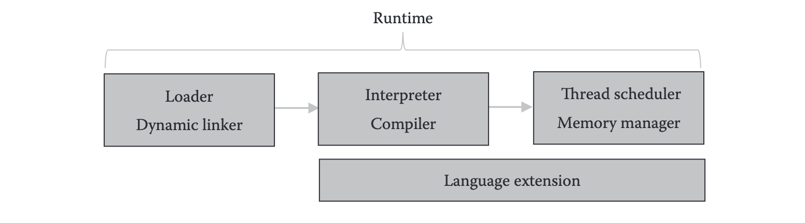
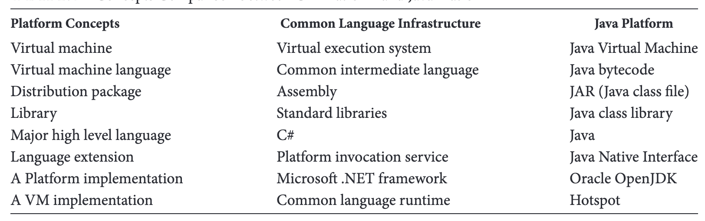
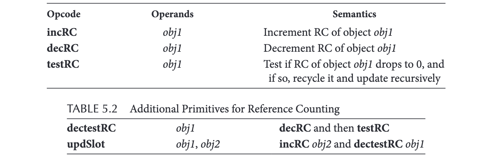

《Advanced Design and Implementation of VMs》读书笔记（一）
很久之前无意间搜罗到的一本介绍 VM 的书，趁此疫情 WFH 期间时间充足读一读。
Chapter 1：虚拟机简介
- Page 4四种常见的 VM 类型：
- 全指令集（ISA）虚拟机：提供针对某个实际 ISA 的全套指令集的模拟和虚拟化，可以让客户操作系统或应用运行其上。如 VirtualBox、QEMU 等；
- 应用二进制接口（ABI）虚拟机：提供针对客户程序的 ABI 模拟功能，可以让符合该 ABI 的应用运行在有着其他类型 ABI 的宿主机上。如 IA-32 Execution Layer（可以理解为适配层）；
- V-ISA 虚拟机：该虚拟机用于执行虚拟指令集，此类虚拟机通常不要求模拟完整的计算机系统；
- 语言虚拟机：直接解释执行源语言的虚拟机，源语言通常以文本代码的形式存在。此类虚拟机通常还需要支持诸如“内存管理”等由语言抽象出的其他功能。
- Page 4针对 ABI 和实际 ISA 的虚拟机通常又被称为“仿真器（Emulator）”。而基于 V-ISA 和具体语言的虚拟机有时也被称为“运行时引擎”。
- Page 5安全型语言的特征：
- 内存安全：内存中的某个数据必须遵守它所属类型对应的规范；如：指针类型不会指向非法值、数组不会有超出其有效范围的元素等；
- 操作安全：操作安全性可确保对某种类型数据进行的操作始终遵循对该类型的限制。如：指针类型变量不允许参与算术运算等；
- 控制结构安全：控制安全性可确保代码执行流永远不会被阻塞，或到达任何不可控区域。如：跳转到恶意代码段。控制安全可以被认为是一种特殊的操作安全。
- Page 6存在着通过硬件实现的 V-ISA 虚拟机。
- Page 6可以通过以静态单分配（SSA）表示形式构建的控制流图（CFG）来进行更高级的 IR 优化（如 Type Specialization、Inline Function、DCE 等）。
Chapter 2：走入虚拟机内部
- Page 9VM 的核心组成主要包括：
- 加载器：解析程序文件到具体的数据格式、加载应用需要的额外资源；加载器还需要检测程序的完整性，在某些实现中，此步骤可能会推迟到执行引擎中进行，如 “java.lang.Runtime.loadLibrary”；
- 动态链接器：动态链接器尝试将所有引用的符号解析为可访问的内存地址。如果引用了尚未加载的符号，则可能会触发加载器来加载符号对应的数据和代码；
- 执行引擎：执行已被加载和动态链接的程序；
- 内存管理器：维护应用的动态数据，以确保内存安全。或提供诸如 GC 等能力；
- 线程调度器：用以提供多线程支持；
- 运行时服务：可以以 C/S 的方式来实现，服务提供方不一定与应用在同一个进程，甚至不太同一台机器。如：浏览器上的 BOM 对象为 JS 虚拟机提供了可以操作网页元素的能力；实现方式可以为 APIs、运行时对象甚至环境变量；
- 语言扩展：即 FFI（Foreign Function Interface），跨语言函数调用。部分以库的形式提供给虚拟机上的应用程序使用；
- Page 14虚拟机模型：

- Page 15V-ISA（Wasm、Java 字节码）一般仅作为其他高级语言的编译目标。JavaScript 既可以作为一种源语言，又可以被作为其他语言的编译目标（如 Emscripten）。
- Page 15源语言、虚拟机与字节码之间的关系：字节码（OpCode 的二进制形式）作为一种编译目标与源语言（比如 Java）没有直接关系；虚拟机类比于 i386 的 CPU 来执行 X86 指令；而任何类型的源语言都有可能被编译成某种特定的字节码目标。
- Page 16一般来说，安全性语言（JavaScript、Python、Java 等）由于缺乏对资源的细粒度掌控能力而不便于（运行成本较高）用来开发 VM。
- Page 18Java 平台（如 “Java SE 8”）是 Java 语言、JVM 虚拟机、Java 类库和相关工具的规范集合。Java 实现（如 “OpenJDK 8”）是 Java 平台的完整实现。Java 平台具有不同的版本，分别称为标准版 SE，企业版 EE 等。它们都共享相同的 Java 语言和 JVM 规范，但定义了不同的库，并且可能具有不同的实现。
- Page 19CLI 平台和 Java 平台在各类概念上的横向对比：

Chapter 3：虚拟机内部数据结构
- Page 21JVM 语言具有两种数据类型：基本类型（保存一个直接值）和引用类型（包含指向对象的指针）。其中类 Object 是所有类的基类（所有类都是 Object 的派生类。Object 含有一个
getClass()方法可以获得一个 java.lang.Class 对象，其中含有关于该类的一些信息），类 Class 是所有其他类的类型（所有类都是 Class 的一个实例），即所有其他类都是一种 Class 类型。其中的某些 Instance-Of 和 Subclass-Of 的关系是由 VM 来维护的。

- Page 22通常来说，一个类对象的数据包含两部分：个体实例数据+类数据；由于 Java 支持继承和多态，因此对类多态方法的调用以及类成员的访问便成了两个最为频繁的操作。虚表属于类的而非对象，其内部含有指向虚方法（virtual）的指针。同一个类的所有对象都使用同一个虚表，因此每个对象都含有一个指向该类虚表的指针。综上，下图（b）中的资源管理方式相较于（a）会有着更好的性能（使得类对象多态方法调用和类成员访问所需要的步骤更少）。
- Page 23JVM 中函数类型的大致描述结构：
typedef struct Method {
char *name; // method name.
char *descriptor; // method descriptor.
Class *owner_class; // class that owns this method.
unsigned char *byte_code; // byte code sequence.
Handler *handlers; // exception handlers.
LineNum *linenums; // line number table.
LocalVar *localvars; // local variables.
Exception *exceptions; // exceptions that may throw.
uint16 modifier; // method access modifier.
uint16 max_stack; // max stack depth.
uint16 max_locals; // max number of local vars.
uint16 vtable_offset; // offset in vtable.
JIT_STATUS state; // JIT compilation status.
unsigned char *jitted_code; // compiled code.
struct {
unsigned is_init : 1;
unsigned is_clinit : 1;
unsigned is_finalize : 1;
unsigned is_overridden : 1;
unsigned is_nop : 1;
} flags; // properties of the methods.
} Method;
上述结构中包含了方法需要在进行编译、调试、Profile、链接、GC 以及异常处理时所需要的所有运行时信息。其中 jitted_code 字段包含了该函数对应的 AOT 代码。is_nop 字段表示函数体是否为空，以供虚拟机进行优化处理。
Chapter 4：执行引擎的设计
- Page 27GC 一般会同时囊括堆内存的分配（即在代码中需要通过 GC 来分配内存）和清理过程，比如 C++ 中常用的“贝姆”（Boehm）垃圾收集器。
- Page 28在解释器模式下的常用优化方法：
- 函数懒加载优化：将函数字节码的解析和加载过程延后到函数被调用时进行。
- 超级指令优化（Super Instruction）：将多个指令（OpCode）进行合并，以减少需要进行的指令分支跳转次数（分支语句会招致 分支预测失败 以及缓存穿透，而两者的代价是昂贵的）；
- 选择性内联：选择性地将一部分字节码组合编译成机器码，这部分机器码会在解释器运行时替换对应的字节码序列，以减少指令分发次数，同时提高执行效率。但在实际应用中，由于可能存在缝合代码，导致这些被连接在一起的机器代码整体质量可能并不高；
- Page 30基于函数的 JIT：流程与 ELF 共享库的动态链接过程类似，函数索引表可以类比为 PLT。当第一次调用函数时，索引表中对应项（函数指针或其他方式）会先调用内部编译器来编译函数，并生成对应的的机器码；然后，待编译完成后，用生成机器码的入口地址作为索引表项的内容，并将该地址返回给调用者，这样后续再次调用该函数时将直接使用函数的机器码（Code Cache）。
该方式的问题在于：JIT 粒度较为粗糙，热代码的命中率较低（比如函数体内耗时的循环结构无法捕捉）。
- Page 31当多个线程要调用同一方法并触发该方法的 JIT 编译时，VM 需要确保相互排斥对同一方法的编译（比如使用单例模式的“双检查锁”，或“自旋锁”）。
- Page 32基于 Trace 的 JIT：Trace 是指在运行时所执行的一段热代码的路径，而该种 JIT 方式只编译位于该路径上的代码。其几个重要步骤如下：
- 识别 Trace：可以通过在函数体（颗粒度一般不够）、循环头（这里可以进行很多优化，比如“循环不变代码外提”、“循环并行化和向量化”等；循环结构的识别可以通过对编译时构建的 CFG 进行深度优先遍历来识别）以及基本块（指的是具有单个入口点和单个出口点，且中间没有分支语句的代码段）中添加计数器来判断代码是否 Hot；
- 形成 Trace：当热代码被识别之后，就可以通过在下次执行流程进入到热代码入口时记录相关操作来形成 Trace；
- 编译 Trace 并缓存生成的二进制代码：在此步骤中可以进行诸如 DCE，“函数内联”等常规优化；
- 适应性地管理 Trace：在执行过程中，也需要确保该 Trace 必须满足的执行条件（Guard）没有发生变化，否则需要无痛地退回到非 Trace 路径以继续执行；
一个例子（Python）：
def square(x):
return x * x
i = 0
y = 0
while True:
y += square(i)
if y > 100000:
break
i = i + 1
对应的 Trace（伪代码，方法 square 可以被内联）：
loopstart(i1, y1)
i2 = int_mul(i1, i1) # x * x;
y2 = int_add(y1, i2) # y += i * i;
b1 = int_gt(y2, 100000)
guard_false(b1)
i3 = int_add(i1, 1) # i = i + 1;
jump(i3, y2)
* 由于普遍性能较差且高性能 JIT 的实现复杂度，截止 2015 年，大部分知名 VM 实现都已经不再使用基于 Trace 的 JIT 方案。
- Page 35基于“循环”和“基本块”的 Tracing-JIT 均无法很好地处理递归调用（直接/间接）结构；
- Page 36Region-Based JIT：以 “tracelet” 为单位进行的、“Outlining”（将函数实现的一部分进行分离，分离的部分将被编译成新的函数，并代替原代码的位置进行调用）方式的 JIT。
- Page 39JIT 和 AOT 的区别：
- AOT 编译通常不会实际执行应用程序或提交执行结果。即应用程序不会处于“运行时”状态。AOT 编译可能会执行应用程序的某些代码，但是其执行原因仅是为了获取某些实现 AOT 所需的必要信息；
- 由于缺乏运行时信息，AOT 编译本身并不清楚所编译的方法是否会实际被执行。而 JIT 仅会编译被实际执行到的代码；
- AOT 编译和应用程序执行是两个严格分开的阶段。在需要时，AOT 阶段可以将编译的结果保存在一个位置，稍后的执行阶段可以在另一个位置使用这些结果，而无需再次编译；
- 对于某些语言的动态特性（如：反射、弱类型、eval() 以及 GC 等，都仅能够在运行时来进行），AOT 方式可能无法实现；
- AOT 编译一般不具有多 ISA 下的可移植性；
Chapter 5：GC 的设计
- Page 45静态生存期分析（Liveness Analysis）的问题：
- 静态生存期分析只能分析位于函数内部的局部变量，而函数之间的对象传递导致了难以被分析到的变量生存路径；
- 静态生存期分析的结果可能不准确；
- 静态生存期分析对于动态语言来说不友好。对于某些需要运行时信息辅助的复杂逻辑难以进行准确的分析；
- Page 46引用计数（Reference Counting）的常用原语：

RC 相关原语的 OpCode 需要 Compiler 在编译源代码到字节码的过程中插入到程序的特定位置。其中的 “updSlot” 主要用于支持赋值语句中对象引用的变化情况。
- Page 48当 RC 的计数将要溢出时，VM 可以选择放弃后续的计数过程，并假设该引用对应的资源将永远不会被释放。常用的 RC 变量大小可以选择为1 字节。当然也可以选择为 1 位，即所有对象仅能拥有在创建时生成的一个引用，超过该引用次数，则资源永远不会被释放。
- Page 48在多线程环境中，可以选择使用原子性的 RC 更新；或者选择在多个线程更新同一个变量的 RC 时，将资源永久化。做法需要 RC 保存其创建时对应的线程 ID，然在线程更新 RC 时判断该线程 ID 与自己保存的创建线程 ID 是否相同，若相同则更新 RC，否则直接溢出，使资源永久化。
- Page 48RC 的一个问题在于“循环引用”的存在。并且插入到目标文件中的 GC 原语也会使文件的体积增大，这对于一些存储空间有限的场景来说可能并不友好。
- Page 49对象跟踪（Object Tracing）：标记-清除、标记-整理、标记-拷贝。
（待更新）